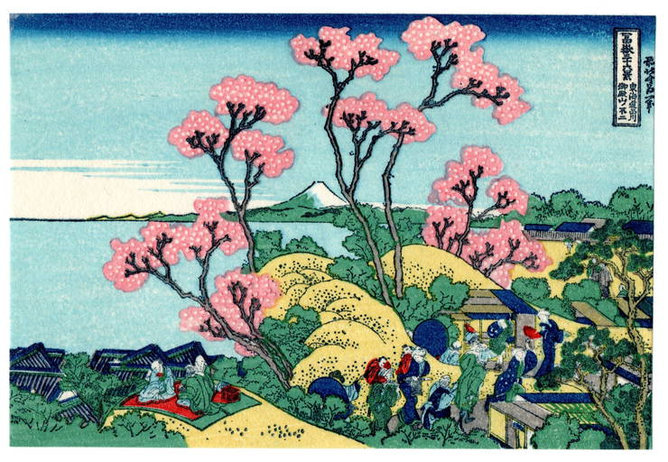
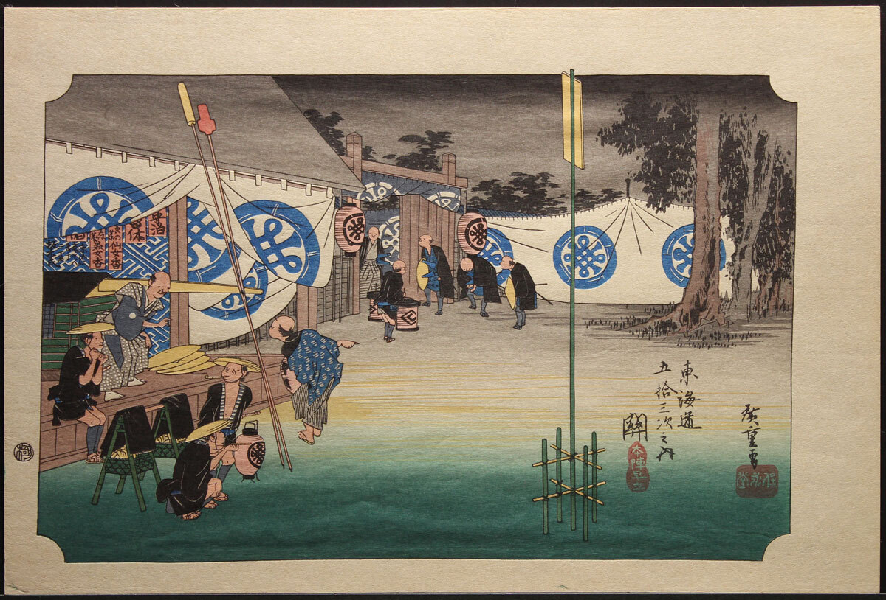
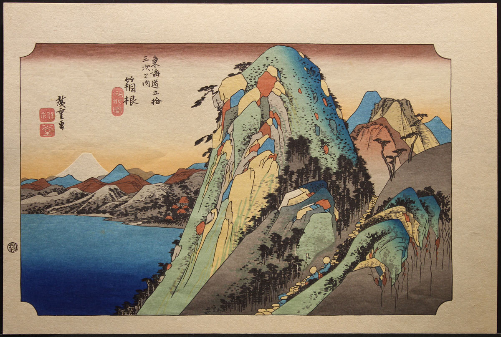

Discovering Takamizawa Mokuhansha and the Art of Japanese Lithography
During my search for Takamizawa Mokuhansha, a Japanese wood-block print publisher, I came across the website of George C. Baxley, who shared some wonderful images showing how lithographs and wood-block prints are made.
On his site, he states:
“Any person is hereby authorized to view, copy, print and distribute this document subject to the following conditions:
– The document may be used for personal informational purposes only;
– The document may only be used for non-commercial purposes;
– Any copy of this document, or any portion thereof, must include this copyright notice.”
Based on that, I believe I’m allowed to use some of these beautiful images from his site to illustrate how the different wood-block and lithographic prints were created.
Baxley’s website also includes a fascinating history of the
Fujiya Hotel, complete with images, drawings, and
lithographs.
Altogether, I decided to keep these here because I really enjoy them
and want to share them — especially the Japanese art, which I find
particularly inspiring.
About Takamizawa Mokuhansha (高見沢木版社)
Origins & Background
Takamizawa Mokuhansha (高見沢木版社) was a Tokyo-based
publisher specializing in mokuhanga (木版画,
wood-block printing).
The company appears to have been founded or led by brothers
Masuro Takamizawa and Tadao
Takamizawa (高見沢 å¿ é›„).
Active roughly from the 1930s through the 1980s,
the firm was renowned for high-quality colour
reproductions of classical ukiyo-e prints as well as a
number of original designs.
Their reproductions often included complete sets of historic
works, such as Hiroshige’s The 53 Stations of the
Tōkaidō, rendered with remarkable fidelity.
Prints by Takamizawa were typically marked with the company’s seal
“高見沢木版社”, which confirmed authenticity and separated them from
lower-quality reproductions of the era.
Significance
Takamizawa Mokuhansha played an important role in preserving and
popularizing traditional Japanese printmaking
during the 20th century.
Their studio combined the craftsmanship of hand-carved blocks and
hand-printed colours with modern distribution, allowing global
audiences to experience the beauty of classic ukiyo-e designs.
Selected Works from Takamizawa Mokuhansha
🌸 1. Floral Print — Cherry Blossoms (c. 1950s)

Publisher: Takamizawa Mokuhansha (Tokyo)
Date: circa 1950s
Medium: Colour wood-block print on washi
paper
Description: A delicate depiction of cherry
blossoms in bloom.
Notes: Demonstrates the publisher’s refined
bokashi (gradient shading) and subtle colour layering
typical of mid-century Takamizawa prints.
🗻 2. The 53 Stations of the TōkaidŠ– Scene I

Original Artist: Utagawa Hiroshige (1797 –
1858)
Publisher: Takamizawa Mokuhansha
Edition: Post-war reprint, ca. 1950
Series: The 53 Stations of the Tōkaidō
(東海道五十三次)
Notes: One of the finest post-war reproductions of
Hiroshige’s classic travel series, faithfully carved and printed by
Takamizawa artisans.
🌊 3. The 53 Stations of the TōkaidŠ– Scene II

Original Artist: Utagawa Hiroshige
Publisher: Takamizawa Mokuhansha
Date: ca. 1950
Medium: Multi-colour wood-block print
Notes: Another example from the same reprint
series, showing Takamizawa’s exceptional attention to linework and
registration precision.
🉠4. Publisher’s Seal – Takamizawa Mokuhansha (高見沢木版社)

Imprint: 高見沢木版社 / Takamizawa Mokuhansha
Usage: Found on genuine Takamizawa editions (margin
or verso)
Purpose: Confirms the publisher’s authenticity and
distinguishes true Takamizawa works from later reproductions.
Closing Thoughts
Exploring Takamizawa Mokuhansha’s prints deepened my appreciation
for how Japan’s wood-block tradition continued well into the modern
era.
Each piece connects classical artistry with 20th-century
craftsmanship — a quiet testament to how art forms evolve yet remain
timeless.
All images and quoted text are used for non-commercial, educational purposes, in accordance with the copyright statement provided by George C. Baxley.